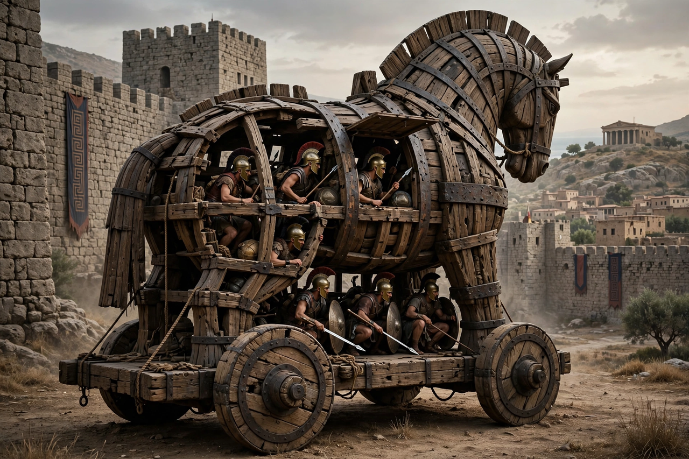

In Greek mythology, the Trojan War was waged against the city of Troy on the coast of Asia Minor by a coalition of Mycenaean Greek states after Paris of Troy abducted Helen from her husband Menelaus, king of Sparta. The war is one of the most important events in Greek myth and has been narrated in many works of Greek literature, most famously Homer's Iliad and Odyssey.
The war's origins lie in the Judgement of Paris: awarded the golden apple of discord by the shepherd-prince Paris, the goddess Aphrodite promised him the most beautiful woman in the world — Helen, wife of Menelaus. Her abduction (or elopement) violated the laws of hospitality and bound Helen's former suitors, sworn to defend her marriage, to join Menelaus's brother Agamemnon in a great expedition.
The Iliad covers a few weeks of the war's tenth year: the quarrel between Agamemnon and Achilles, Achilles' withdrawal, the death of his companion Patroclus at the hands of Hector, prince of Troy, and Achilles' return, killing of Hector and ransoming of his body to King Priam. Other poems of the lost Epic Cycle narrated the war's full arc: the mustering at Aulis (and the sacrifice of Iphigenia), the deaths of Achilles and Ajax, and the stratagem of the Trojan Horse — a giant wooden horse devised by Odysseus, concealing soldiers who opened the city to the Greek army by night. Troy was sacked and burned; Aeneas escaped to found, in Roman tradition, the line leading to Rome, as told in Virgil's Aeneid. The surviving Greek heroes faced perilous homecomings (nostoi), Odysseus's ten-year voyage forming the Odyssey.
The Greeks of the classical age treated the war as real history, dating it to around 1194–1184 BC (Eratosthenes). Heinrich Schliemann's excavations at Hisarlik in the 1870s identified the site with Troy; later work revealed a citadel repeatedly destroyed, with the layer known as Troy VIIa showing signs of violent destruction around 1180 BC, broadly consistent with the traditional date and with Hittite references to "Wilusa" (Ilion) and conflicts involving the Ahhiyawa (Achaeans). Most scholars now accept that the legends preserve memories of Bronze Age conflicts between Mycenaean Greeks and western Anatolia, though the war as narrated — its scale, heroes and divine machinery — remains myth.
The Trojan War became the central subject of Western literature, retold by Euripides, Virgil, Chaucer, Shakespeare (Troilus and Cressida), Goethe and innumerable modern authors and filmmakers. Phrases such as "Trojan horse" and "the face that launched a thousand ships" remain part of everyday language.